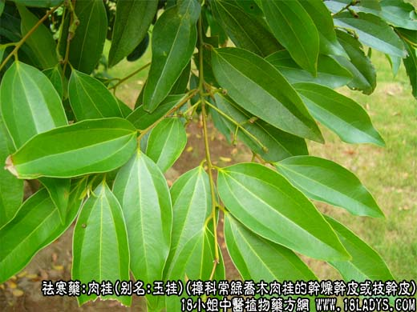
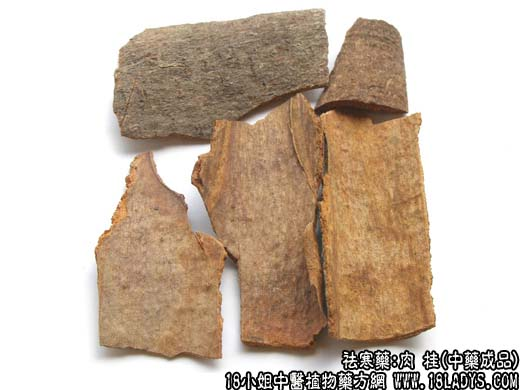
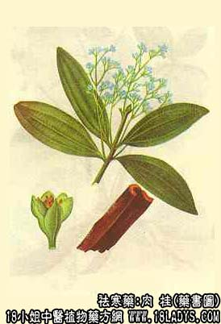

本品为常用中药。《神农本草经》列为上品。
别名：玉桂、油桂、牡桂。
来源：本品为樟科植物常绿乔木肉桂的干燥干皮或枝干皮。多为人工栽培，亦有部分野生。
产地：主产于广西的平南、桂平、岑溪、藤县、钦州、东兴；广东的高要、德庆、罗定等地。
性状鉴别：企边桂（广西地区）：呈长凹槽形，左右两侧向内卷边，卷边呈圆筒形或版圆筒形。凹槽中心略凸、从外皮看则略下陷。长约30~45厘米，全宽约10~13厘米（不计算卷边宽4.5~6厘米），厚约3~5毫米。外表皮灰棕色或棕褐色。两端各有5毫米，削去栓皮的部分呈棕色。全体有不规则的横长皮孔和多数微突起的小瘤点，偶有略突起的横皱纹及灰绿色花斑（苔藓类植物着生后的痕迹，俗称彩皮）。内表面黄棕色或棕色、光洁。用指甲刻划时可显深棕色油纹。气浓烈香甜，味甜辛。
以皮细有彩皮、油性足、味甜辣、嚼之少楂者为佳。其它品名规格参看附注。
主要成分：含挥发油，其中主要为桂皮醛，另含乙酸桂皮酯，少量苯甲醛。
功效与作用：1、温中散寒，主要是扩张血管而使血液循环旺盛，并有一定的发汗作用。由于能促进血液循环，故有助于增强其它药的效力，前人的经验说肉桂能”疏通血脉“、”宣导百药“，又说：”诸药不能透达之处，有肉桂引之，莫不透达“，都是这个意思。
2、健胃：促进胃液分泌。
炮制：刮去栓皮，捣碎或磨粉。
性味：辛甘、大热。
归经：入肝、肾、脾经。
功能：温脾胃、暖腰肾、通血脉，散散止痛。
主治：脾胃虚寒，腹胀胃痛，消化不良，肾虚腰痛，腹泻腹痛，血寒经闭。
临床应用：1、用于治疗阳虚内寒、肾气虚弱。凡患慢性病或体质衰弱而有大便溏泄、虚喘、腰痛脚软、尺脉虚细者，可配附子入补益肝肾药，方入附桂八味丸。
2、用于治疗虚寒腹痛、食欲不振、上腹胀满、或吐或写泻，取其有健胃作用，方如安中散。
3、用于妇科，治小腹冷痛，经期后期（月经稀少），有活血通经镇痛作用，故前人的经验说：”下腹冷痛，非用肉桂不止“。如小腹痛与月经关系不大，可配延胡索、当归、川芎等；如为经前痛，可配赤芍、桃仁、当归等，方如少腹逐瘀汤；如为经来后期，兼有小腹冷痛，可配干姜、祁艾、补骨脂等再加四物汤。孕妇则慎用肉桂。
4、用于血虚气弱患者。在竣补血气的方剂中常配用肉桂，可活跃血循环和改善消化吸收功能，使补药能更好地发挥作用，故十全大补汤（黄芪、肉桂、当归、川芎、白芍、熟地、党参、白术、茯苓、炙甘草）和保元汤（黄芪、党参、甘草、肉桂）均用肉桂。
此外，因肉桂能活跃血循环，故入利水剂中能加强利尿作用；入痈疡剂中可加强对阴疽（寒性脓疡）的消散作用。
使用注意：1、肉桂与附五均能温中散寒，但肉桂强心和兴奋身体机能的作用不及附子，且有一定的发散（发汗）作用，故救治休克虚脱时用附子而不用肉桂。
2、肉桂的有效成分易挥发，故不入煎，一般宜服。但也有人主张用于改善循环和入补剂时宜焗服，用于温中散寒而健胃时则研末冲服较好。
3、桂枝与肉桂比较：桂枝长于瘟经通络，而肉桂长于温肾祛寒。
用量：焗服0.9~3g。研末冲服0.6~1.5g。
处方举例：1、安中散：肉桂2.4g（焗服）延胡索9g，小茴香9g，高良姜9g，煅牡蛎18g（先煎）、砂仁6g，茯苓15g，白芍(酒炒)15g，甘草6g，水煎服。
2、少腹逐瘀汤（《医林改错》）：肉桂3g（焗服），小茴香（炒）7粒，干姜0.6g,延胡索3g，没药3g，当归9g，川芎3g，赤芍9g，蒲黄6g，五灵脂6g，水煎服。
注：1、肉桂品名规格较多，即有国产又有进口。即有人工栽培也有野生。一棵生长在六年以上至几十年的桂树，剥下来的树皮可以加工成几种不同的商品。主要加工依据是桂树的生长所限，皮层的薄厚粗细，含油的多少，决定加工成什么品种。如选干皮厚在3~5毫米皮细油足的加工企边桂，皮厚在5毫米以上皮色较粗油足的加工成油桂，皮厚皮粗油少的加工成板桂，枝干皮较厚含油性较大的作油桂通，枝干皮较薄的加工为桂通或桂心。
2、进口肉桂，过去多由越南进口，品名很多，如清化桂，高山企边桂，低山企边桂，桂楠等，因越南地处亚热带，气候温热潮湿适宜于肉桂生长。更兼越桂，多生长在高山区或低山区云雾较大的森林之中，且生长年限较长。因而品质较好。其加工型或略同国产，只是皮色较细，多彩皮（灰白色的附生苔衣几满表皮）。气极甜香，味甜辛浓烈（扩散性较强），嚼之无渣，近十几年来我国广西，广东两地大量栽培，产是不断增加，不但保障了国内市场需要，并大量运销国外，故不再进口越桂。因而不再叙述性状。